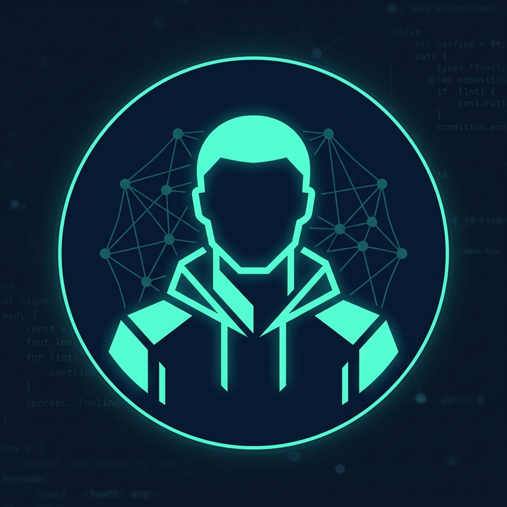

Hi, my name is
I'm a Senior AI Engineer specializing in building production-grade LLM applications, RAG systems, and machine learning pipelines. Currently crafting AI solutions at Poonawalla Fincorp.
Hello! I'm Utkarsh, a Senior AI Engineer who loves building intelligent systems that solve real-world problems. My journey into AI started during my Master's at IIT Hyderabad, where I researched adversarial machine learning and computer vision.
Today, I specialize in designing and deploying production LLM applications — from agentic RAG chatbots used by 300+ sales reps to financial research tools that accelerated research speed by 83%. I've worked across the full ML stack: from model training and fine-tuning to containerized deployment on AWS and Azure.
When I'm not building AI systems, you'll find me exploring quantitative finance, backtesting trading algorithms, or diving into the latest research papers on multi-agent architectures.

⚡ I work across the full AI/ML stack — from training deep learning models to deploying scalable inference pipelines. Here are the technologies I use daily:
Built an intelligent chatbot using Azure AI Search for unstructured policy docs and MongoDB for structured data, orchestrated by a Planner Agent with 92% tool routing accuracy. Adopted by 300+ sales reps with 4.7/5 satisfaction.
Developed an LLM-powered research tool that auto-ingests stock news and YouTube finance videos using Whisper + FAISS, enabling 83% faster research with map-reduce retrieval and o3-mini for generation.
Fine-tuned an LLM on SME-validated address datasets and deployed via FastAPI + Streamlit + Azure Functions. Achieved 0.95 precision with minimal false positives, eliminating 6 hours of daily manual work.
Researched PGAP attacks on adversarially trained robust models, achieving a 98% fooling rate with targeted perturbations in crucial image regions. Advanced understanding of model robustness.
Deployed a quantized FaceNet CNN on Raspberry Pi for real-time face recognition via webcam, achieving 90% accuracy in challenging scenarios. Published a research paper on LBP-based CNN at NSCFET-2019.
Built time-series models (ARIMA, SARIMA, LSTM, Transformer) for stock prediction with extensive backtesting. Achieved 1.56 Sharpe ratio using technical indicators and automated Zerodha/Fyers integration.
Artificial Intelligence & Machine Learning
Computer Engineering — University of Mumbai
NVIDIA
Google Cloud
HackerRank
IITH FOML 2020
NSCFET conference in 2019
I'm always open to discussing new opportunities, interesting AI projects, or just connecting with fellow engineers. Whether you have a question or just want to say hi, my inbox is always open!